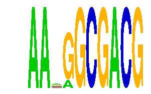

family_3 |
|---|
|  |
| Download PWM |
| Download instances (motifs) |
| Show motif distribution |
Query_ID | Query_Consensus | Subject_Name | Source_DB | Subject_ID | Length | Orientation | Offset | Divergence | Overlap | Subject_Consensus |
|---|---|---|---|---|---|---|---|---|---|---|
| family_3 | AANGGCGACG | SOX2 | HOCOMOCO | SOX2_HUMAN.H10MO.B | 16 | reverse-complement | -11 | 0.853 | 5 | CCATTGTYATGCAAAN |
| family_3 | AANGGCGACG | SOX10 | JASPAR | MA0442.1 | 6 | reverse-complement | -2 | 0.406 | 4 | CWTTGT |
| family_3 | AANGGCGACG | Sox2 | JASPAR | MA0143.1 | 15 | reverse-complement | -10 | 0.784 | 5 | CCWTTGTYATGCAAA |
Sequence | Start_position (from start) | Start_position (from end) | Average conservation | Best conservation score | Instance_with_best_CS | Best_Z-score | Instance_with_best_ZS | Strand |
|---|---|---|---|---|---|---|---|---|
| chr13:58213996-58215182 | 713 | 723 | 0.9792 | 0.995 | AARRGCGACG | 32.700714 | AARRGCGACG | 1 |
| chr8:72497295-72498410 | 958 | 968 | 0.9848 | 1 | AARRGCGACG | 35.708115 | AANGGCGACG | 1 |
| chr1:180266683-180268064 | 635 | 645 | 0.9999 | 1 | AANGGCGACG | 35.708115 | AANGGCGACG | -1 |
| chr1:74170890-74172151 | 241 | 251 | 0.1497 | 0.253 | AANGGCGACG | 32.700714 | AARRGCGACG | 1 |
| chr10:81021990-81023074 | 236 | 246 | 0.0344 | 0.096 | AANGGCGACG | 35.708115 | AANGGCGACG | -1 |
| chr16:90221014-90222037 | 116 | 126 | 0.9986 | 1 | AARRGCGACG | 35.708115 | AANGGCGACG | 1 |
| chr1:88255297-88257057 | 681 | 691 | 0.8447 | 1 | AARRGCGACG | 35.708115 | AANGGCGACG | 1 |
| chr2:25078848-25080445 | 1121 | 1131 | 0.672 | 0.954 | AARRGCGACG | 35.708115 | AANGGCGACG | 1 |
| chr13:58229014-58230067 | 336 | 346 | 0.9894 | 1 | AARRGCGACG | 35.708115 | AANGGCGACG | -1 |
| chr17:29483731-29484765 | 345 | 355 | 0.0019 | 0.006 | AARRGCGACG | 32.700714 | AARRGCGACG | -1 |
| chr6:91465192-91466859 | 1062 | 1072 | 0 | 0 | AARRGCGACG | 35.708115 | AANGGCGACG | -1 |
| chr10:112365395-112366435 | 488 | 498 | 0.0012 | 0.003 | AANGGCGACG | 35.708115 | AANGGCGACG | 1 |
| chr11:93816585-93817635 | 138 | 148 | 0.0009 | 0.003 | AARRGCGACG | 35.708115 | AANGGCGACG | 1 |
| chr11:52045341-52046348 | 172 | 182 | 0.803 | 0.991 | AANGGCGACG | 32.700714 | AARRGCGACG | 1 |
| chr11:120441757-120443354 | 1237 | 1247 | 0.6665 | 0.929 | AANGGCGACG | 35.708115 | AANGGCGACG | -1 |
| chr19:9063412-9064478 | 173 | 183 | 0.0007 | 0.004 | AANGGCGACG | 32.700714 | AARRGCGACG | 1 |
| chr6:88468158-88469633 | 474 | 484 | 0.001 | 0.008 | AARRGCGACG | 35.708115 | AANGGCGACG | 1 |
| chr14:21521620-21523080 | 675 | 685 | 0.976 | 1 | AANGGCGACG | 35.708115 | AANGGCGACG | 1 |
| chr12:70284180-70285811 | 1497 | 1507 | 1 | 1 | AARRGCGACG | 32.700714 | AARRGCGACG | 1 |
| chr6:125031310-125032361 | 753 | 763 | 0.2754 | 0.471 | AANGGCGACG | 35.708115 | AANGGCGACG | 1 |